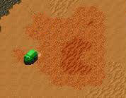
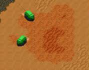
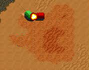
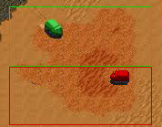
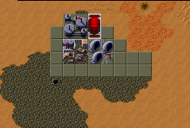
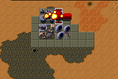
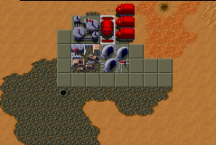

Multithreaded race conditions explained using Dune II
Arnaud Loonstra
17 November 2013
Abstract
Multithreading is a potential programmers nightmare. Key in preventing problems while programming multithreaded programs is understanding the source of where problems could arise. In this article the behavior of multithreaded programs is suggested using a metaphor based on the strategy game Dune 2 from the 90's.
Introduction
Multithreading is the method for computer programs to utilize all processors in a multi processor system. Nowadays it’s hard to find a system which only consists of a single core. The increase of processor speeds have come to a halt and the remedies around this are multiple processors. In the article ‘The Problem with Threads ‘ [1] by Edward A. Lee of the University of California at Berkeley it is argued that the ongoing trend towards parallelism is a too big steps from the sequential paradigm of programming computers. “Although threads seem to be a small step from sequential computation, in fact, they represent a huge step. They discard the most essential and appealing properties of sequential computation: understandability, predictability, and determinism. :understanding of threads is essential.”
Since Lee is saying we need to understand in order to control we should first understand the problem. Nobody will understand a solution if not knowing what the problem is. I propose to explain the problem of multithreading by using a game. This game will be based on Dune II. For this proposal I assume the reader is familiar with the game Dune II [2]
Sequential computing
The most used and understood paradigm is sequential computing. The game would start with a single harvester, a refinery and a spice field. The harvester collects the spice and delivers it at the refinery.

In this metaphor the harvester is the thread, the refinery the output and the spice field is the memory segment assigned to the harvester. The harvester is instructed to collect spice until it is full and deliver it to the refinery. The start of the game illustrates sequential computing.
Multithreading
Now imagine if we had a second harvester.

We would be collecting spice with twice the speed. In a physical world situation we would not imagine the two harvesters wanting to collect spice on the same spot. The drivers would see if the spot is occupied. However these harvesters are fully automated ones and thus are not equipped with eyes nor common sense.

If the two harvesters would be assigned to the same spice field they could run into the situation that they crash into each other when harvesting the same spot. Since the spice, in our game, is highly explosive we would have no spice at all and lose both harvesters.
We need to build a protection system in order to prevent a situation like this. A very simple one would be to assign specific areas of the spice field to each harvester.

This way the two harvesters would never be in each others way and both harvesters can operate autonomous.
There are many more methods in order to prevent the harvesters from crashing. For the illustration of this metaphor I will leave these for the reader to explore.
Mutex
Once a harvester is finished, it is programmed to deliver its spice cargo to the refinery.

We can imagine a situation where two harvesters are both returning to the refinery. However only one can be in the refinery at a time.

Since the harvesters are fully automated the second harvester would just drive into the refinery and crash into the harvester already there. Since the spice is highly explosive we would not only lose the harvesters but also the complete refinery.
In order to prevent this disastrous situation we would need some locking mechanism which will prevent the second harvester from driving into the refinery. The harvesters would need to be equipped with some method to request if the refinery is available. We are going to equip the refinery with a mutex lock. The harvesters will request availability of this mutex. If the mutex is available the harvester will have access to the mutex and needs to lock the mutex so others can’t access it. This way the harvesters will only enter the refinery if it could lock the refinery. If not it needs to wait before it can.
We now have a safe way of operating multiple harvesters but our unstoppable urge to get more spice has made us order more harvesters. They are doing their job fine but we can now notice something else happening:

We have 3 harvesters waiting to enter the refinery. Of course this is not efficient since these harvesters are doing nothing while waiting. Our demand for spice forces us to make this more efficient.
It’s obvious we need another refinery. Which will bring more methods to the harvesters for finding entrance to a refinery. The harvesters are becoming more expensive to operate because of all these methods. We’ll introduce the semaphore concept in this game in order do determine refinery availability. Continuing with the game we will also introduce the ‘Carryall’. This airplane will replace the methods of the mutex lock on the refinery and will organize which harvester will go to which refinery. It would also be possible to introduce pipes and sockets to transfer the spice around. Introducing these concepts in order to illustrate multithreading methods used in modern implementations like Erlang will introduce new assets into the game which are not in the original game.
Conclusion
The article by Edward A. Lee argues that parallelism is too complicated for programmers to understand. In my research into understanding this I first ran into trying to understand the problem. By using a single context for illustrating the problems a more fundamental understanding of what’s happening and how it’s circumvented is more accessible. The Dune II metaphor I propose would be a single context to explain the problems and illustrate methods and solutions in an accessible way.
References:
- Edward A. Lee, The Problem with Threads, EECS Department, University of California, Berkeley, 2006, Jan, UCB/EECS-2006-1, IEEE Computer 39(5):33-42, May 2006
- http://en.wikipedia.org/wiki/Dune_II